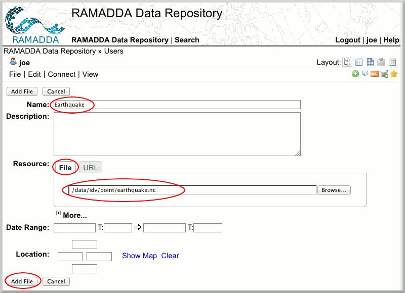
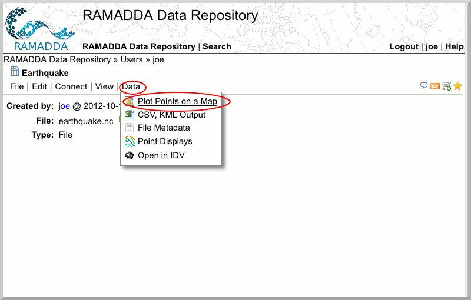
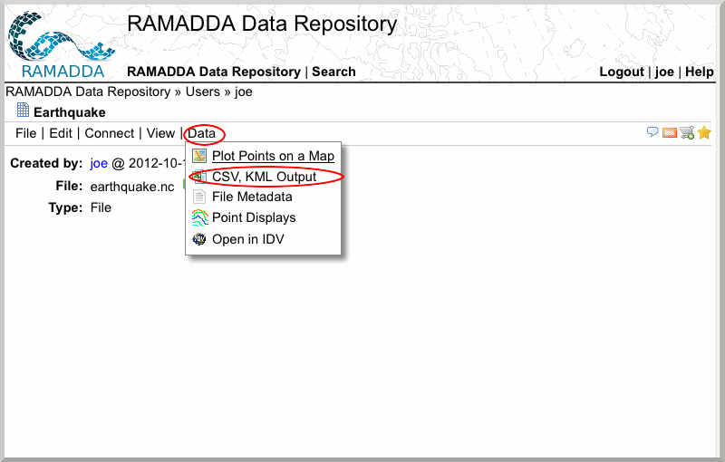
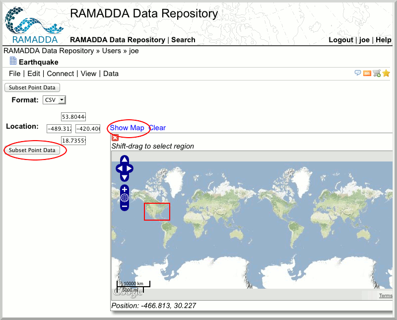

Working with Point Data
RAMADDA can also work with point data observations
- Go to your RAMADDA Instance and navigate to your "Users" folder.
- Create a new entry by clicking the plus sign. You will have a panoply of choices. Select "File".
- Upload the file
/data/idv/point/earthquake.nc

- You can examine the netCDF metadata by going to [ht::menu Data {File Metadata}]
- Select [ht::menu Data {Plot Points on a Map}]

- Select [ht::menu Data {CSV, KML Output}]

- Select a format and subset over a region.
